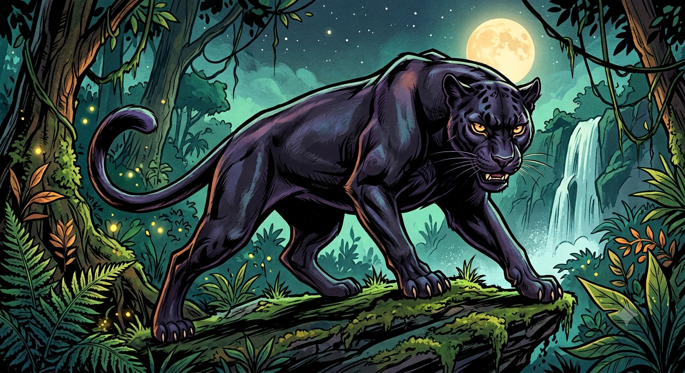

Bem-Vindos ao Joryverso Otaku!
Por:NIcolly Santos
Fala, galera! Venha acompanhar momentos da minha vida
Fala, galera! Sejam muito bem-vindos ao meu espaço! Todos me chamam de Ni, e criei o Nizinhazzx — com essa vibe icônica em preto e azul — para ser o nosso ponto de encontro oficial para falar sobre a vida de um jeito leve, sincero e sem enrolação. Por aqui, vou soltar as melhores indicações, comentar os lançamentos da temporada e falar a real sobre o que vale ou não a pena assistir, então fiquem à vontade para debater nos comentários e me contar logo de cara: qual é o anime favorito da vida de vocês? ��✨